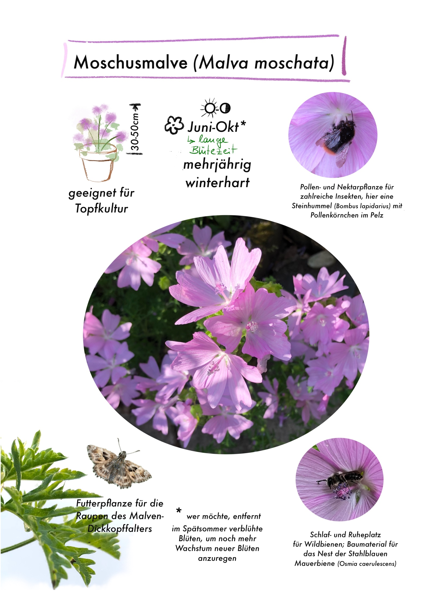

Biodiversität für Garten, Balkon & Firmengelände
Die Fülle ist überall — wenn wir sie zulassen.
Ich begleite Menschen dabei, ihr Stückchen Erde lebendig zu machen: Schritt für Schritt, mit Freude statt Aktionismus. Aus jedem Garten, Balkon oder Firmengelände kann ein Zuhause für Pflanzen und Tiere werden.
Mein Warum
Pflanzen und Tiere gehören zusammen wie Schloss und Schlüssel.
Jede Pflanze bietet ganz bestimmten Faltern, Bienen, Käfern und anderen Mitgeschöpfen Wohnung und Nahrung. Wenn wir Pflanzen wählen, die zu Standort, Boden und Licht passen, entstehen Vitalität, Schönheit und Vielfalt fast von selbst.
Ich war Tierärztin geworden, weil ich Menschen und Tieren helfen wollte. Mit der Zeit wurde mir klar, wie oft Tiere krank werden, weil sie unnatürlich leben — und wie sehr Natur um uns herum jeden Tag weniger wird. Also habe ich meinen Fokus verschoben: von der Praxis in den Garten.
Meine Geschichte lesen →(folgt)
Wie ich helfe
Drei Wege zu mehr Lebendigkeit
Biodiversität für Garten & Balkon
Ich zeige passende Pflanzen und den biologischen Zusammenhang für deinen Standort. Gemeinsam entwickeln wir ein Konzept — und ich begleite dich bei Beschaffung und Umsetzung.
Naturnahe Schul- & Firmengelände
Von der Kita bis zum Betriebsgelände: verwahrloste Flächen werden zu Lebensräumen, an denen Menschen und Tiere sich begegnen können.
Workshops & Naturfasern
Vorträge, Beratungen und praktische Workshops — unter anderem zur Verarbeitung von Wolle und Pflanzenfasern: Spinnen, Weben, Färben.
„Grün ist nicht gleich grün. Im Frühling frisch und lichtdurchlässig, im Sommer fest, im Herbst raschelnd trocken — meine Arbeit ist ein Fließen, im Rhythmus der Tage und Jahreszeiten.“Sabine Schröder-Gravendyck

Aus der Pflanzenwelt
Jede Pflanze hat ihre Geschichte
In meinen Pflanzenporträts zeige ich, welche Tiere eine bestimmte Pflanze brauchen — als Nahrung, Nistplatz oder Kinderstube. Die Raupen des Zitronenfalters etwa fressen ausschließlich Blätter von Faulbaum oder Kreuzdorn. Ohne diese Pflanzen gibt es keine Zitronenfalter.
Standort Blütezeit Tierische Gäste
Mehr Pflanzenporträts →Werde Teil des Netzwerks
Melde dich, wenn du ein Stück bessere Welt ergärtnern willst.
Mit meinem Programm ermögliche ich es dir, dein Stückchen Erde lebendig zu machen — und dabei Ruhe, Freude und Verbundenheit zu erleben.
Jetzt Kontakt aufnehmen